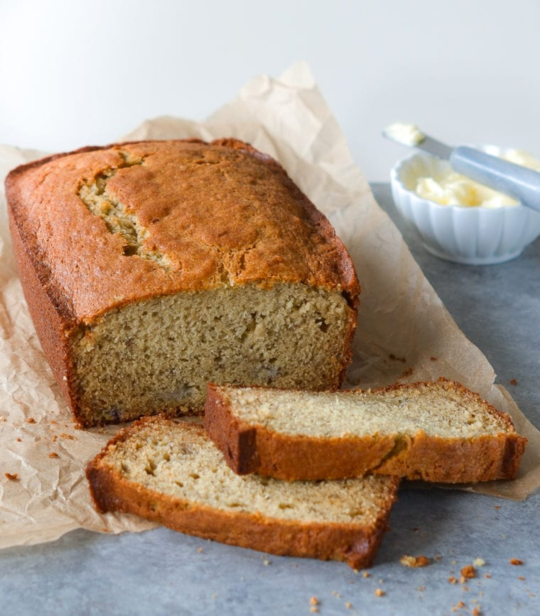

Banana Bread

Description
A delicious golden-brown banana bread with a soft crumb and sweet flavor that'll be delicious out of the oven, and the perfect breakfast when toasted up the next day. With minimal prep and just one bowl, this Banana Bread is a perfect homemade dessert that'll be ready in just over an hour. Perfect for beginner bakers!
Ingredients
- 3 ripe bananas, mashed
- 1/3 cup melted butter
- 1 cup sugar
- 1 egg, beaten
- 1 teaspoon vanilla extract
- 1 teaspoon baking soda
- Pinch of salt
- 1 1/2 cups all-purpose flour
Steps
- Preheat Oven: Preheat your oven to 350°F (175°C).
- Mash Bananas: In a large mixing bowl, mash the bananas with a fork.
- Mix: Stir in the melted butter, add sugar, egg, and vanilla extract. Mix well before sprinkling in baking soda and salt. Stir to combine.
- Fold Batter: Gently fold in the flour until the batter is smooth.
- Pour: Pour the mixture into a greased loaf pan.
- Bake: Bake in the preheated oven for 60 minutes, or until a toothpick inserted into the center comes out clean.
- Cool: Let the bread cool, then enjoy!